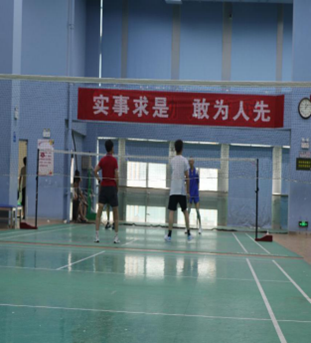

消息
全民健身在兰州市落地开花
文/ 龙大军
（本刊讯） 为响应党的二十大 报告提出的关于“广泛开展全 民健身活动， 加强青少年体育 工作， 促进群众体育和竞技体 育全面发展， 加快建设体育强 国。”的政策， 同时， 为提高 西北民族大学新闻学专业学 生的实践能力， “全民健身” 短学期实践小组于 6 月下旬多 次前往兰州市多处体育设施 建设处进行采写编评实地考 察任务。
6月23 日早晨九点左右， 记者来到了兰州市全民健身 中心附近， 在这里记者看到了 不同年龄段的人群在这边进 行体育运动。在雁南街道北滨 河东路兰州市体育公园我们 采访了一位名为周兰珍的 60 岁老人， 她的老家在山东， 现 居住在兰州， 她每天从五泉来 到这里来跳锅庄， 老人和蔼可 亲， 她面带微笑地跟我们分享 她和锅庄的故事。她说“我经 常来这片广场跳舞， 得空我就 来，约上三两好友， 和着音乐,跟着领舞的人跳，那敢情好 啊， 旁边就是黄河， 晚些人还 多， 多惬意啊， 喜欢嘛， 没事 多运动， 对身体好着呢 … …” 看着周兰珍老人高兴， 我们也 跟着高兴。跟老人道别后， 我 们又在足球场上采访了一位 热爱运动， 名为付文博的小朋 友，他今年 12 岁了，在上小 学，人长得健硕生气， 踢足球， 那是一踢一个准， 踢得满头大 汗， 好不容易赶上他休息间隙 记者带着问题上去采访，得 知， 每个周末他都会来踢球， 因为他热爱足球。每天， 这里 人群云集， 老人、中年人、青 少年、大学生、小孩……有打 球的、唱歌的、跳舞的、活动 筋骨、室内的， 室外的， 总而 言之人很多。全民健身不就是 人人参与， 健身增强其体魄意 识的觉醒吗？让健身观念融 入到每一个人的心中， 健身成 为一种习惯， 健康成为一种常 态。
普及全民健身建设，社 区当先行。兰州市健身基础设 施建设， 不仅是体育馆、健身 中心、体育公园林立。在社区， 健身设施同样器材新颖， 门类 齐全。位于兰州市城关区旧 大路的弘苑小区，自 2021 年 始， 弘苑小区便引进了先进新型的健身设施， 建设固定的健 身区域， 供社区里的人使用， 居民出门就能健身， 方便又快 捷。在早些年， 社区里是没有 健身设施的， 听社区里一些老 人说， 以前人们想要健身得要 出远门， 去公园或者体育馆， 那些地方健身设施齐全， 人多 氛围也好。无独有偶， 兰州市 城关区民主西路的金驼小区 里， 不仅建设了齐全的健身设 施， 而且， 在社区
里， 还有健 身房， 虽然是收费制， 却也满 足了社区居民健身选择的多 样性和专业化。在社区走访的 过程中， 也存在着社区缺乏健 身设施的情况， 兰州市城关区 旧大路的天源小区、和顺美 居，通过管理人员记者了解
到， 小区里的空间比较有限，都以植被绿化为主， 加之居 民有条件自行购买健身器材， 能够居家健身。虽然社区存在 缺乏健身设施的情况，却也 向我们传递着 : 社区里没有健 身设施， 居民也能具备健身的 能力和条件， 人们的选择更多 样。不能否认的是， 社区健身 设施的逐步完善， 全民健身正 走向一个主动、开放、全面、 发展的未来。
健身房不只是在发达的 城市里有，在偏远的县城同 样落地生根。周杰是兰州本地 人， 他不仅热爱健身， 还把这 份热爱当成了一种事业， 他从 城市来到偏远的小镇， 在甘肃 省兰州市榆中县夏官营镇落 户，创办了 OMG 健身房，给 西北民族大学榆中校区和兰 州大学榆中校区的学生提供 一个良好的健身环境。当然， 不止是学生， 生活在夏官营镇 的人们都能共享健身的福泽。 当问及他为什么要来这么偏 远的地方开健身房， 他是这样 说的： “就我现在的经营观念 而言， 健身是我生活中的一部 分， 那如果我不来的话， 你们 去哪儿健身？你们为了求知 来这偏远的地方， 我觉得应该 给你们提供一个更优质的生 活服务。我不希望现在的大学生都待在宿舍里面， 待在学校 里面， 而且我是打心底里面想 去推广健身， 想让所有的青少 年走进健身房这就是我最大 的初衷， 就比如有人的地方就 有市场， 不管这个市场规模的 大小， 最主要的是看你怎么经 营， 既然来到这地方， 你会尽 力经营好，你的买卖也不会 差， 你的事业也不会差。推广 健身就是我来这个地方做健 身房的一个最大的原因， 因为 热爱， 所以我来到这儿。”就 是不乏像周杰这样的人， 地方 再偏远， 全民健身也能生根发 芽， 健身设施也能落地生根让
更多的人参与全民健身， 提高 国民身体素质。
全民健身，全民参与，不 仅是城市， 在偏远的县城， 都 有齐全的健身设施， 无不在向 我们传递一个信号：全民健身 发展前景正在以一种势不可 挡之力紧跟时代， 助力时代进 步， 推动国家发展。全民健身 事关全体人民的福祉， 对于个 人而言， 它是最实惠的的健康 投资， 可以让我们的精神与体 魄都更加强健；对社会来讲， 它是最普惠的公共服务， 有利 于保障人们的身体健康。不只 是在兰州， 全国各地的全民健 身事业一定会越来越好， 充分 发挥全民健身的效益， 增强国 人体魄， 增强国人自信。兰州 只是作为一个缩影， 不仅是在 兰州， 在全国各地， 全民健身 一直在发展着，成长着。